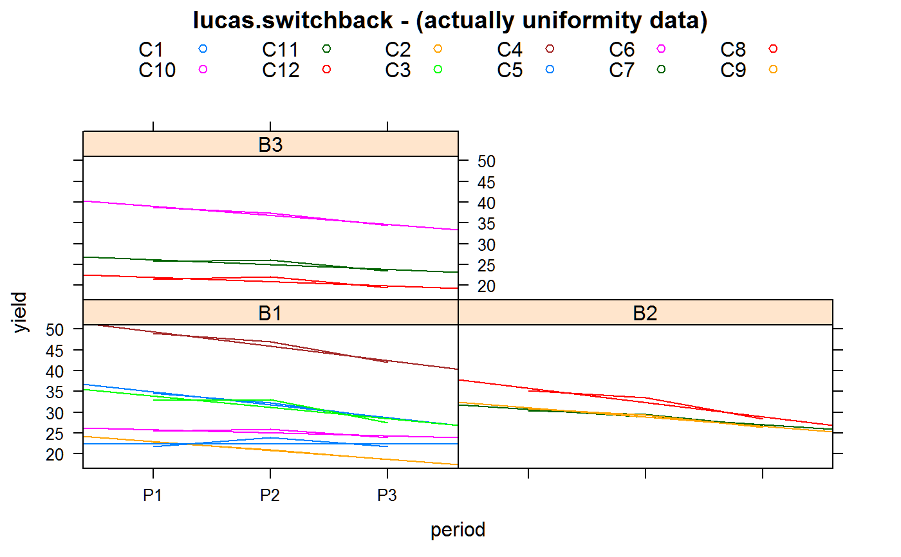

lucas.switchback.RdSwitchback experiment on dairy cattle, milk yield for 3 treatments
data("lucas.switchback")
A data frame with 36 observations on the following 5 variables.
cowcow factor, 12 levels
trttreatment factor, 3 levels
periodperiod factor, 3 levels
yieldyield (FCM = fat corrected milk), pounds/day
blockblock factor
Lucas says "because no data from feeding trials employing the present designs are yet available, uniformity data will be used".
Six cows were started together in block 1, then three cows in block 2 and three cows in block 3.
Lucas, HL. 1956. Switchback trials for more than two treatments. Journal of Dairy Science, 39, 146-154. http://doi.org/10.3168/jds.S0022-0302(56)94721-X
Sanders, WL and Gaynor, PJ. 1987. Analysis of Switchback Data Using Statistical Analysis System. Journal of Dairy Science, 70, 2186-2191. http://doi.org/10.3168/jds.S0022-0302(87)80273-4
library(agridat) data(lucas.switchback) dat <- lucas.switchback # Create a numeric period variable dat$per <- as.numeric(substring(dat$period,2)) libs(lattice) xyplot(yield ~ period|block, data=dat, group=cow, type=c('l','r'), auto.key=list(columns=6), main="lucas.switchback - (actually uniformity data)")# Need to use 'terms' to preserve the order of the model terms # Really, cow(block), per:cow(block), period(block) m1 <- aov(terms(yield ~ block + cow:block + per:cow:block + period:block + trt, keep.order=TRUE), data=dat) anova(m1) # Match Sanders & Gaynor table 3#> Analysis of Variance Table #> #> Response: yield #> Df Sum Sq Mean Sq F value Pr(>F) #> block 2 30.93 15.464 55.345 5.132e-05 *** #> block:cow 9 1700.97 188.997 676.426 1.907e-09 *** #> block:cow:per 12 120.47 10.040 35.932 4.137e-05 *** #> block:period 3 14.85 4.950 17.717 0.001194 ** #> trt 2 1.58 0.789 2.825 0.126048 #> Residuals 7 1.96 0.279 #> --- #> Signif. codes: 0 '***' 0.001 '**' 0.01 '*' 0.05 '.' 0.1 ' ' 1## Analysis of Variance Table ## Df Sum Sq Mean Sq F value Pr(>F) ## block 2 30.93 15.464 55.345 5.132e-05 *** ## block:cow 9 1700.97 188.997 676.426 1.907e-09 *** ## block:cow:per 12 120.47 10.040 35.932 4.137e-05 *** ## block:period 3 14.85 4.950 17.717 0.001194 ** ## trt 2 1.58 0.789 2.825 0.126048 ## Residuals 7 1.96 0.279 coef(m1) # trtT2 and trtT3 match Sanders table 3 trt diffs#> (Intercept) blockB2 blockB3 blockB3:cowC10 #> 37.5833333 -4.1750000 -14.7250000 18.0083333 #> blockB3:cowC11 blockB1:cowC2 blockB1:cowC3 blockB1:cowC4 #> 4.6041667 -12.5375000 -1.1416667 14.9402778 #> blockB1:cowC5 blockB1:cowC6 blockB2:cowC7 blockB2:cowC8 #> -15.1555556 -10.9305556 -1.0291667 5.7416667 #> blockB1:cowC1:per blockB3:cowC10:per blockB3:cowC11:per blockB3:cowC12:per #> -3.0500000 -2.1500000 -1.1500000 -1.0000000 #> blockB1:cowC2:per blockB1:cowC3:per blockB1:cowC4:per blockB1:cowC5:per #> -2.1000000 -2.7000000 -3.4500000 -0.0500000 #> blockB1:cowC6:per blockB2:cowC7:per blockB2:cowC8:per blockB2:cowC9:per #> -0.7500000 -1.8500000 -3.4000000 -2.2000000 #> blockB1:periodP2 blockB2:periodP2 blockB3:periodP2 trtT2 #> 1.4833333 1.1166667 1.3333333 -0.5333333 #> trtT3 #> -0.5541667